The idea
Robots that act with foundation-model agents still fail when a new scene differs from what the agent expects. A plan made once from the first camera frames breaks when an object is not where it seemed, a grasp slips, or the scene changes during execution.
WorldRSI gives the agent a safe place to try things before acting. At the start of every new task the agent builds its own world of the scene, rehearses in it, and returns to reality with knowledge rather than a fixed policy. Across tasks, the way it rehearses improves itself: a meta harness, evolved from the records of past episodes, gives every new rehearsal a better start.
Method
Build a world
From the instruction and the first frames only, the agent reconstructs the scene as an executable physics simulation: objects, fixtures, the calibrated robot, and a check of what success means. It renders its world from the robot's cameras and corrects it until it agrees with the real frames.
Rehearse
It practices the task in its world and in shifted and changing copies of it (objects displaced, the target moved during the approach, light or sensor noise). It writes down what it learned as a harness (phases, checks, repairs) and a library of skills it tested.
Act live
A new agent session acts on the real scene with only the harness and the skills: one short script at a time, looking at the cameras after each, so it can re-measure and recover. The world shapes how the agent acts; it need not match reality exactly.
Improve the harness
A proposer agent reads the records of earlier episodes and writes a new version of the harness; another model removes anything tied to one scene; a version is kept only if it does better on scenes it was not built from.
On a physical robot
A bimanual station with two 6-DoF arms and three RGB cameras (an overview camera and one on each wrist), no depth. Six tasks follow recordings made on the station. Each world is built from a recording's first frames only.
Real episodes
The live agent is GPT-6 Astra, running at half speed with the harness and skills from its rehearsal. Each video shows the three cameras, condensed from the full episode.
Three of the six tasks have been completed on the physical robot so far; real-robot runs of the other three are in progress.
Six tasks: the real first frame and the agent's world
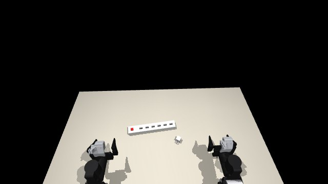
Plug in a charger
Plug the charger into the power strip, prongs fully in.
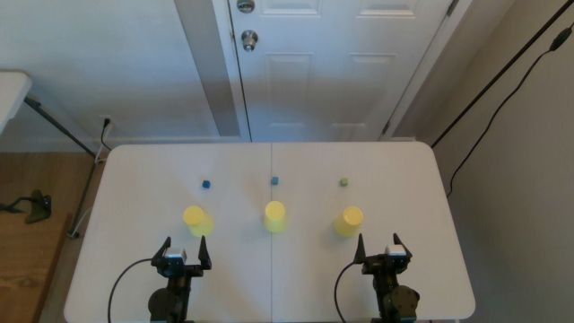
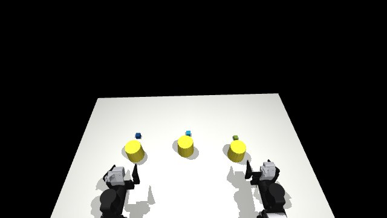
Cover and uncover blocks
Cover three blocks with cups, then uncover them in a given order.
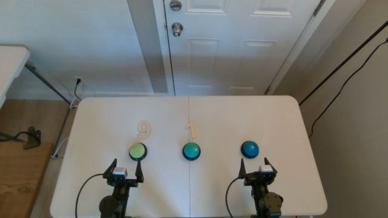
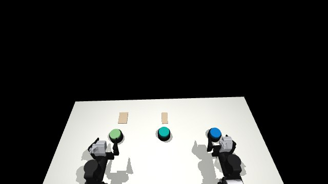
Press buttons by number
Press each carded button as many times as its card shows.
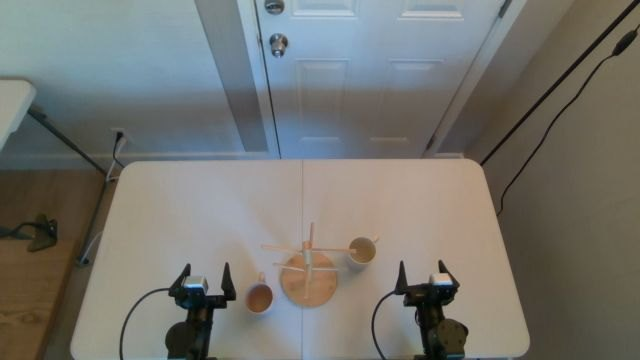
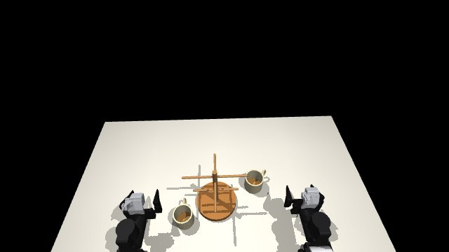
Hang mugs
Hang both mugs on the rack by their handles.
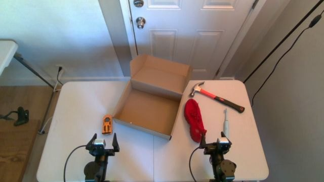
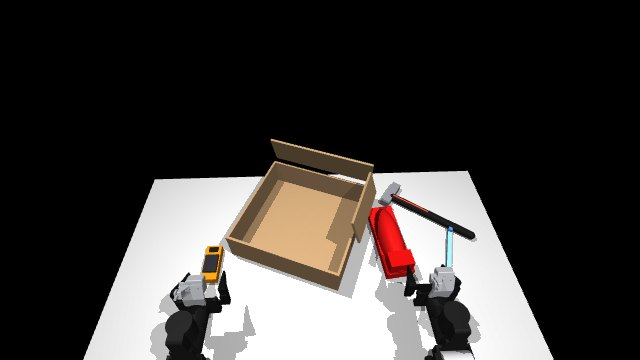
Pack objects
Put four objects into the box, front ends pointing left.
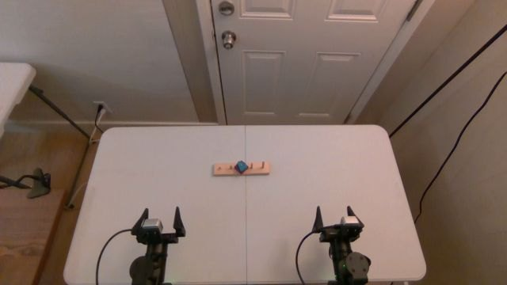
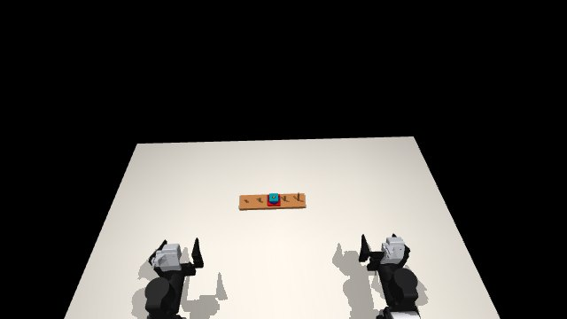
Tower of Hanoi
Move the three-piece stack to the left-end peg, never larger on smaller.
"Twin": rehearsals of the hand-over by a live agent on a hidden simulated twin of the recorded scene, built by us and never seen by the rehearsing agent (32 of 34 succeed).
The same three tasks, rehearsed on a hidden twin
Before the real robot, a live agent with only the hand-over acts on the hidden twin through the same robot interface it later uses on the station.
Held-out benchmark results
Three robustness benchmarks built on LIBERO, where the benchmark's simulator stands in for reality and the agent sees only camera frames. 640 held-out scenes, fixed before any method ran on them; one attempt per scene.
| Benchmark | Held-out scenes | Show-Harness† | Direct | WorldRSI | WorldRSI-Meta |
|---|---|---|---|---|---|
| LIBERO-MAX (changes during execution) | 200 | 2.0 | 50.8 | 78.5 | 84.5 |
| LIBERO-PRO | 160 | 4.4 | 67.5 | 78.8 | 83.1 |
| LIBERO-Plus | 280 | 2.1 | 70.0 | 81.1 | 83.2 |
| All | 640 | 2.7 | 63.4 | 79.7 | 83.6 |
Success (%), Claude Opus 5.5. Direct: a program written once from the first frames. †Show-Harness with the same model and up to 985 simulator steps; within the budget of the other methods it succeeds in 1 of 640 scenes. Scene by scene (exact McNemar): WorldRSI vs. Direct +137/−33 (p < 10−15); WorldRSI-Meta vs. WorldRSI +60/−35 (p = 0.013).
Where the gains come from
| LIBERO-MAX event | n | Direct | WorldRSI | Meta |
|---|---|---|---|---|
| target moved | 26 | 4 | 58 | 54 |
| receptacle moved | 26 | 12 | 69 | 73 |
| obstacle inserted | 26 | 58 | 69 | 85 |
| camera shift | 26 | 65 | 92 | 96 |
| sensor noise starts | 24 | 61 | 79 | 92 |
| light switch | 24 | 79 | 96 | 100 |
| visual theme switch | 24 | 62 | 79 | 88 |
| distractors appear | 24 | 71 | 88 | 92 |
| Perturbation | n | Direct | WorldRSI | Meta |
|---|---|---|---|---|
| LIBERO-PRO | ||||
| instruction reworded | 40 | 68 | 80 | 90 |
| objects changed | 40 | 58 | 70 | 70 |
| positions swapped | 40 | 75 | 80 | 88 |
| task changed | 40 | 70 | 85 | 85 |
| LIBERO-Plus | ||||
| object layout | 40 | 63 | 78 | 80 |
| camera viewpoint | 40 | 80 | 83 | 85 |
| robot initial state | 40 | 68 | 83 | 83 |
| language | 40 | 78 | 85 | 80 |
| lighting | 40 | 73 | 85 | 90 |
| background texture | 40 | 75 | 83 | 85 |
| sensor noise | 40 | 55 | 73 | 80 |
Success (%), Claude Opus 5.5. When the target or the receptacle is moved during execution, a program written once almost always fails; rehearsing in a world that includes such changes recovers most of these scenes.
Other models and more scenes
| Model | Held-out set | Scenes | Direct | WorldRSI | WorldRSI-Meta |
|---|---|---|---|---|---|
| GPT-6 Astra | LIBERO-MAX | 100 | 37.0 | 75.0 | 78.0 |
| GPT-6 Astra | LIBERO-PRO | 160 | 56.0 | 79.7 | 84.2 |
| Gemini 4 Argon | LIBERO-MAX | 100 | 56.0 | 78.8 | – |
| Claude Opus 5.5, two rounds of held-out scenes | all three | 1,578 | 60.8 | 79.5 | 82.4 |
The meta harness was evolved with Claude Opus 5.5 and transfers to GPT-6 Astra unchanged. Rehearsal removes most of the gap between models: Astra's Direct is about 10 points below Opus's, while their WorldRSI results do not differ significantly. The second round adds the remaining 500 LIBERO-MAX Lite cases and 440 more LIBERO-PRO and LIBERO-Plus scenes, fixed the same way.
Comparison with a zero-shot VLM harness
Show-Harness lets a VLM drive the robot zero-shot with 2–4 cm action units, subtask planning and failure recovery. We run its released code, prompts and default zero-shot plugins on the same scenes, robot interface and success check.
| Show-Harness | |||||||
|---|---|---|---|---|---|---|---|
| Model | Held-out set | Scenes | Direct | WorldRSI | same budget | ≤985 steps | 50 action steps |
| Claude Opus 5.5 | LIBERO-MAX | 200 | 50.8 | 78.5 | 0.0 | 2.0 | 1.0* |
| LIBERO-PRO | 160 | 67.5 | 78.8 | 0.0 | 4.4 | 1.2 | |
| LIBERO-Plus | 280 | 70.0 | 81.1 | 0.4 | 2.1 | – | |
| GPT-6 Astra | LIBERO-MAX* | 100 | 37.0 | 75.0 | 0.0 | 2.0 | 2.0 |
| LIBERO-PRO | 160 | 56.0 | 79.7 | 0.6 | 3.8 | 1.9 | |
| Gemini 4 Argon | LIBERO-MAX* | 100 | 56.0 | 78.8 | 5.0 | 23.0 | 21.0 |
| LIBERO-PRO | 160 | 75.0 | – | 4.4 | 26.9 | 17.5 | |
Success (%). *The first 100 LIBERO-MAX scenes. "50 action steps" is the episode length of Show-Harness's own real-robot evaluation, here with up to 5,000 simulator steps. Scene by scene, WorldRSI beats its 50-step episodes +202/−0 with Opus and +197/−1 with Astra.
How Show-Harness was set up, and why it fails here
- Views. We orient both cameras so that the directions in its prompts hold on screen: on the overview camera a forward move goes down the image and a right move to the right; on the wrist view, with the fingertips at the top, a forward move brings what is at the bottom toward the fingers. We verified this by moving the arm and measuring the image motion; the camera setting shipped with its LIBERO interface is mirrored left-right against these directions.
- Calibration, as on its real robots: the safety floor is the table height and the empty-grasp width is that of LIBERO's gripper.
- Unchanged: its runner, interpreter, prompts and default zero-shot plugins (subtask planning, proprioception, recovery, adaptive step, action chunks, action history). Two hardware-only plugins are off: setpoint smoothing and a human keyboard override.
- Models. Claude Opus 5.5 and GPT-6 Astra receive the same requests through Amazon Bedrock (both reject a temperature there); Gemini 4 Argon, its default model family, runs at medium thinking.
- Why it fails. A few centimetres per decision need dozens of decisions per task: 586 of Opus's 640 episodes used up the 985 steps, and in 31% the arm stayed blocked for five or more units in a row, its setpoint pushing against a cabinet or the table. Gemini does best: 84% of its episodes get past the first subtask and 20% get blocked.
Details
Benchmarks and held-out scenes
All three benchmarks extend LIBERO: a Franka Panda arm in MuJoCo performs language-specified tabletop tasks in four suites (Spatial, Object, Goal, Long). The agent receives the instruction, RGB-D frames from the overview and wrist cameras (512×512) with their calibration, the robot's proprioception, and a small robot interface (observe, Cartesian moves, gripper, wait). It never sees the simulator state. A run succeeds under LIBERO's protocol: the goal holds at some step within the suite's step budget (220, 280, 300 and 520 steps at 20 Hz).
- LIBERO-PRO swaps the objects' positions, asks a different task in the same scene, rewords the instruction, or changes the objects' appearance.
- LIBERO-Plus perturbs object layout, camera viewpoint, robot initial state, language, lighting, background texture and sensor noise, at five levels.
- LIBERO-MAX changes the scene during execution, for example when the gripper comes near the target; its Lite track has 800 cases with eight event types.
Held-out sets, written by a script from metadata before any method ran on them, with no scene in common with development: LIBERO-MAX 200 (two disjoint samples of 100 Lite cases, each stratified over the eight event types); LIBERO-PRO 160 (four suites × {reworded, objects changed} × 10 tasks, plus four suites × {swapped, task changed} × 10 tasks from a new initial state); LIBERO-Plus 280 (four suites × seven factors × five easy and five hard scenes, no task shared with development).
Settings and cost
- Direct: one program written from the first frames (20 minutes for the agent).
- WorldRSI: stage 1, 40 minutes in the agent's own world with no access to the real scene; stage 2, 30 minutes for a new live session with only the harness and the skills.
- WorldRSI-Meta: as WorldRSI, with stage 1 starting from the meta harness.
- Meta harness. Evolved first in twelve agent-built worlds of development scenes, then on live episodes of 24 development scenes; the version used was selected on 32 further development scenes the proposer never saw (29 of 32, against 23 for its starting point).
- Cost per scene (median time, mean API cost): Direct 1.2 minutes and $0.29; WorldRSI 8.3 minutes and $1.58; WorldRSI-Meta 8.2 minutes and $1.75.
Worlds the agent built on LIBERO
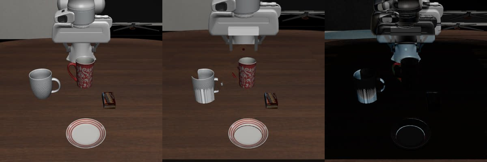
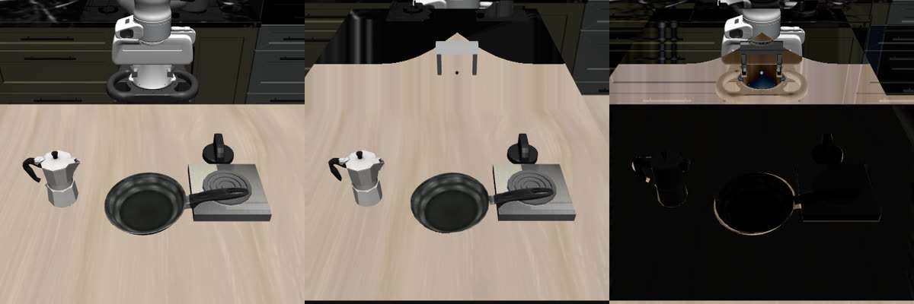
Citation
@misc{zhang2026worldrsi,
title = {WorldRSI: Robot Agents That Build Worlds to Improve Themselves},
author = {Zhang, Yunbei and Li, Yijiang and Wang, Janet and Hamm, Jihun and Vasconcelos, Nuno},
year = {2026},
url = {https://worldrsi.github.io}
}